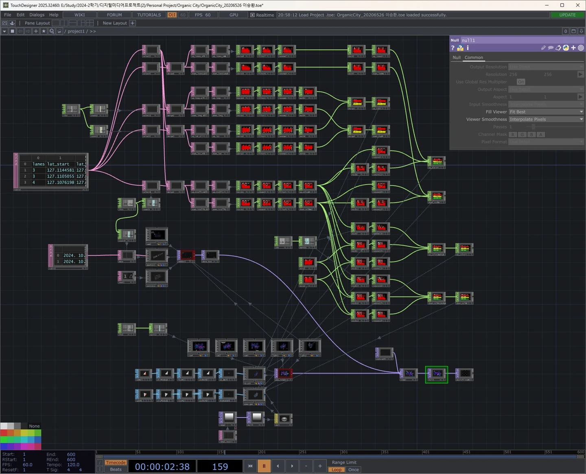

2024 / Data Visualization / New Media
City of Organism
A visualization of Seoul’s traffic flow through the metaphor of cellular metabolism. Changing forms and colors reveal the city as a living organism.
Seeing the city as an organism
I was interested in the resemblance between movement across a city and the exchange of materials within cells. Both can be understood through flows, connections, and changes over time.
City of Organism uses this biological metaphor to give Seoul’s traffic data a spatial form. The road network becomes a moving structure in which changes in traffic appear through the shape and color of three-dimensional elements.

From public data to a spatial structure
Connect the datasets
I joined October 2024 traffic-speed data from TOPIS with Seoul’s standard road-link data, using road-link IDs to match the records.
Locate each road segment
The matched data provides start and end coordinates, direction, lane count, and hourly traffic-speed values for the road segments.
Prepare the time series
I reorganized the month’s hourly values into a coordinate-based TSV dataset and imported it into TouchDesigner.
Map data to form
Lane count controls the width of each triangular prism. Traffic speed controls the base-triangle height, prism height, and color. The elements move between the road segment coordinates.
A biological metaphor for urban flow
The visual approach is guided by cellular metabolism: the city is encountered as a changing, connected body. The full October sequence plays as a loop, allowing the structure to evolve over time.
Form and color carry the traffic-speed values. This makes the data visible as changes in the overall structure and visual intensity, while preserving a coherent spatial flow.

Implementation and contribution
This was an individual project. I handled the public-data preprocessing, road-link and coordinate mapping, TouchDesigner network, parameter mapping, visual concept, and documentation.
- Data processing
- Python, road-link matching, coordinate mapping, and TSV preparation
- Visualization
- TouchDesigner
- Source material
- Seoul traffic-speed and road-link datasets, October 2024